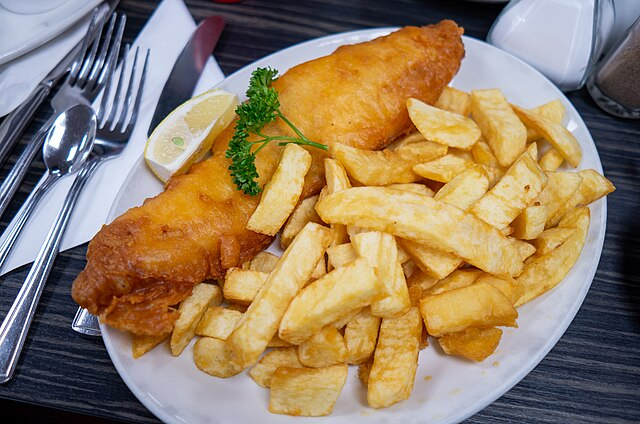

The Culture of London
The United Kingdom comes rich with culture, impacting the daily lives of every English citizen through religion, food, social life, and music. London, as said before, acts like a melting pot for many cultures, so this page will be focusing more on the United Kingdom as a whole, to get a more isolated feel for English culture. When it comes to religion, the United Kingdom is predominantly Christian. The last census in 2021 estimates nearly 50% of all citizens are Christian! Diving deeper into that, the most common sect is Anglicanism, followed closely by Catholicism, Presbyterianism, and Methodism. Of course, the United Kingdom is made up of different states, which have different churches, such as Scotland and the Church of Scotland being a Christian source. The other most common religions are actually agnostic / atheist coming in at 37.2%, Islam at 6.5%, and Hindu at 1.7%. Religion goes deep into the United Kingdom’s history which you can find on the History page here.

Quickly touching on food, you can read more here, the United Kingdom has many signature meals that all have fascinating origin stories to them. Meals such like Sticky Toffee pudding and the famous Fish and Chips all originate in the United Kingdom.
Moving on to social life, the most popular and seen as the epicentre of social life in the United Kingdom, is pub culture. Many people go to pubs to catch up with their pals, grab a drink or two, and watch some football. Do not take this as an excuse to just get alcohol, this is permanently ingrained as a social hub for all citizens. In small towns around the country, pubs are seen as the one place for people to gather and enjoy each other’s company. Some pubs even do more than just all mentioned above. Some offer lodging on their upper levels for travelers, or some are even know as ‘theatre pubs’ that perform plays for all the customers to be entertained by. Pubs are an absolutely huge part of the English culture, yet there is still more. To quickly touch on them, sports like football (link to activities page) are still massive parts of the culture, as are theatres, museums, and festivals.

Lastly, to give a brief overview of the United Kingdom’s music scene. If we want to go back in history, the United Kingdom has been the native land to many extremely talented bands. The Beatles, The Rolling Stones, The Who, The Kinks, The Clash, do they all start with The? When it comes to popular genres like rock and punk, those bands are the ones that dominate. A genre like hip hop has had many prolific rappers come from the United Kingdom, such as MF DOOM, known today as the king of underground rap, and Slick Rick, who was pioneer at the early stages of the genre. In recent day, you have rappers like Central Cee and Dave, but also Little Simz who has arguably dropped one of the best albums of the 2020’s decade to hip hop, Sometimes I Might be Introvert. When it comes to pop, you have titans like Coldplay, Adele, Ed Sheeran, and Dua Lipa. It’s safe to say that the UK might have the most vibrant music scene in the whole world.
Grab a Bite in London
 Visit PageMap of London
You can come check here to see where the activity is located in London. If there is anything very strictly located in London there will be a pin on the map to it's location. Otherwise it will be empty.